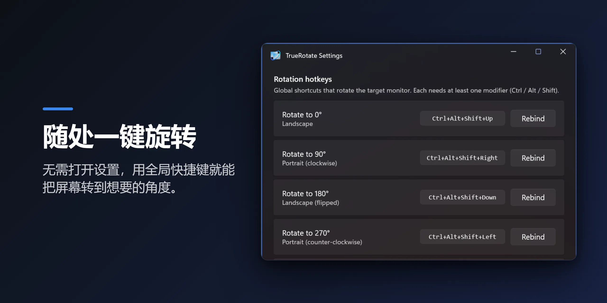
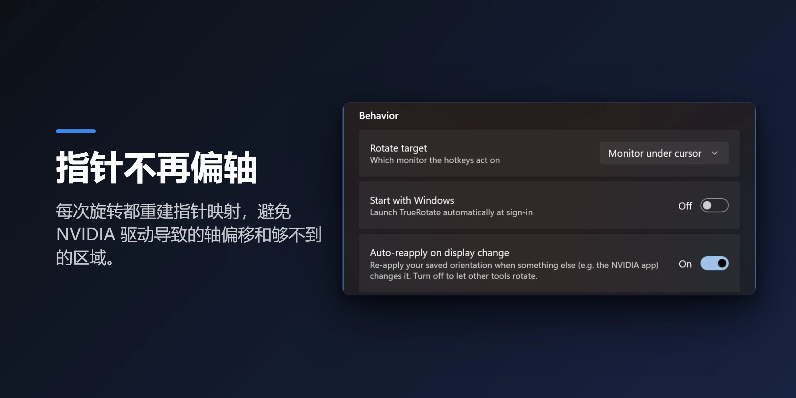
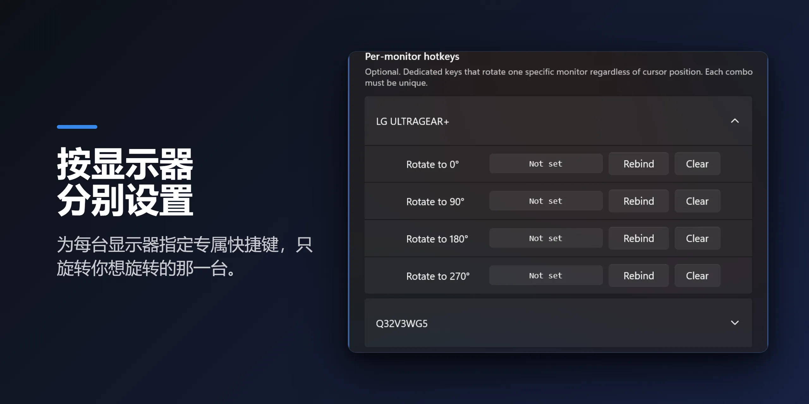

NVIDIA 屏幕旋转问题
在 NVIDIA 系统上把显示器转成竖屏后，鼠标却仍像横屏一样移动？ 你把光标往侧面推，它却上下移动 —— 指针方向相反，屏幕一部分还会变成光标无法到达的死区。
这通常在 NVIDIA 应用或控制面板更改显示设置后立刻出现，重启也无法解决。这是众所周知的 NVIDIA 驱动问题，并非你的操作有误。
TrueRotate 如何解决
TrueRotate 在每次旋转时都会通过 Windows CCD（连接与配置显示器）API 重新枚举显示模式，并重建光标坐标映射。错误轴向和死区根本不会出现。
通过全局快捷键或托盘菜单，将任意显示器旋转到 0°、90°、180° 或 270°。只要从 TrueRotate 旋转，即使在多显示器、多 GPU 环境下，鼠标在每个屏幕上都能正常移动。
功能
全局旋转快捷键
默认 Ctrl+Alt+Shift+方向键，可完全自定义。无需打开设置即可随处旋转 —— 当 Windows 或 NVIDIA 的旋转快捷键失效时的可靠替代。
修复 NVIDIA 轴向问题
每次旋转都会重新映射光标，错误轴向和死区不再出现。
每显示器快捷键
为每个显示器分配与光标位置无关的专用旋转键。
一键循环
一个快捷键依次切换 0 → 90 → 180 → 270。
自动重新应用
当 NVIDIA 面板等其他应用更改方向时，恢复到你保存的方向。
干净安静
随 Windows 启动，Fluent（WinUI 3）设置，7 种语言。无广告、无跟踪。
预览



默认快捷键
| 快捷键 | 旋转 |
|---|---|
| Ctrl+Alt+Shift+↑ | 0° — 横向 |
| Ctrl+Alt+Shift+→ | 90° — 竖向 |
| Ctrl+Alt+Shift+↓ | 180° — 横向（上下翻转） |
| Ctrl+Alt+Shift+← | 270° — 竖向（反向） |
默认情况下，快捷键旋转光标所在的显示器。所有快捷键均可在设置中更改。
常见问题
除 NVIDIA 外的 GPU（AMD、Intel）也能用吗？
可以。旋转使用 Windows 标准显示接口，因此适用于任何 GPU。鼠标轴向错乱主要出现在 NVIDIA 上，但无论使用哪种 GPU，TrueRotate 都会在每次旋转时重新校正光标。
旋转后鼠标方向相反的问题也能修复吗？
可以，这正是 TrueRotate 的核心。每次旋转都会重新映射光标坐标，因此竖屏显示器上鼠标像横屏一样移动、或出现无法到达的死区的问题都会消失。
可以更改快捷键或为每个显示器单独设置吗？
可以。所有旋转快捷键都能在设置中自由更改，还能为每个显示器分配专用按键。
有广告或数据收集吗？
没有。无广告，无跟踪。是否随 Windows 启动也可自行开关。